FullPOS Cloud · Aceptación local antes del asistente guiado
Recorrido completo del cliente capturado con Playwright contra servicios
exclusivamente locales. Sin tokens, contraseñas ni datos personales en las imágenes.
Sitio http://127.0.0.1:4330 · App http://127.0.0.1:4400 ·
API http://127.0.0.1:4004 · PostgreSQL 127.0.0.1:56561 (daleventa_local)
Escritorio 1280 × 860 · Móvil 390 × 844 · Empresa de prueba «Bodega Aceptacion …»
1. Registro una pantalla, cinco campos
Escritorio 1280
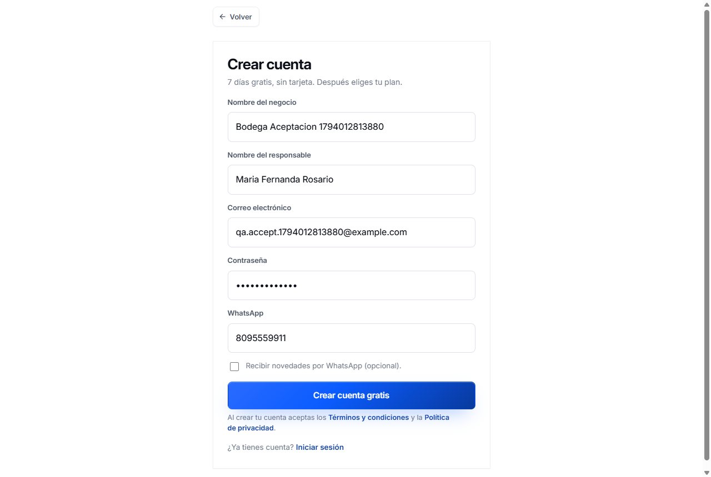
Móvil 390
2. Iniciar sesión
Escritorio 1280
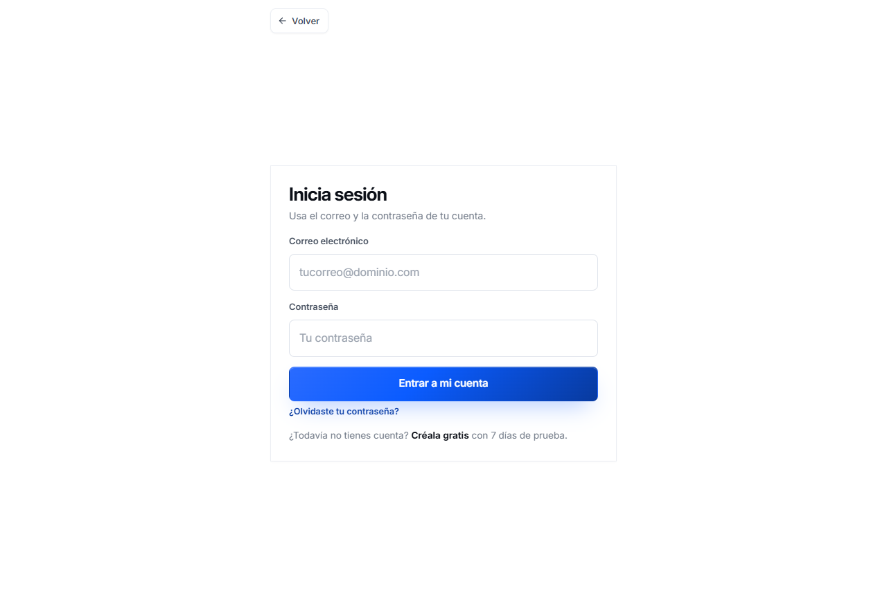
Móvil 390
3. Bienvenida nombre real de la empresa + 3 preguntas
Escritorio 1280
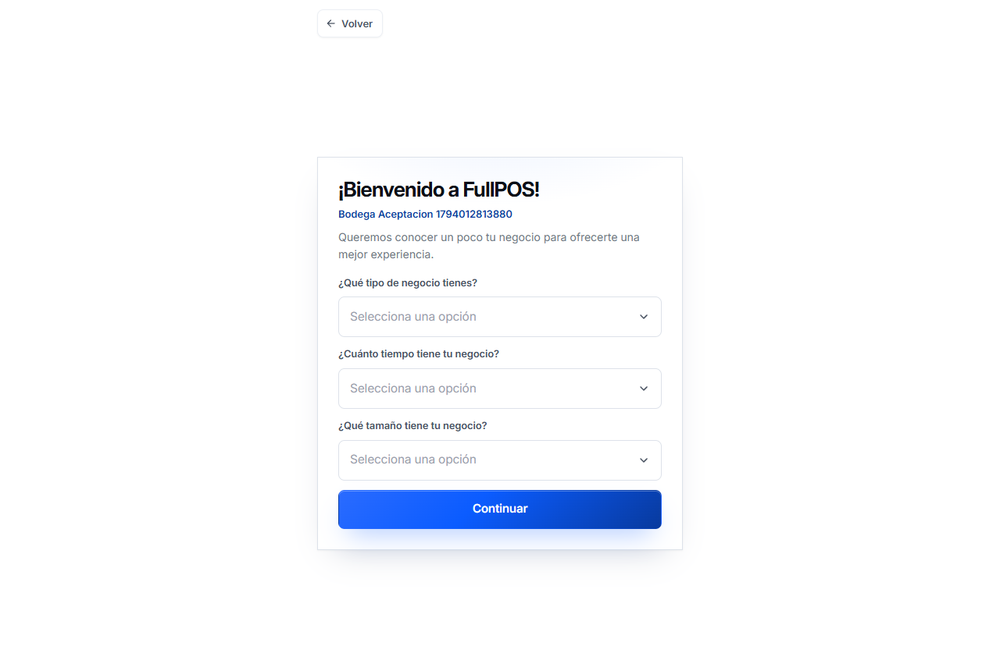
Móvil 390
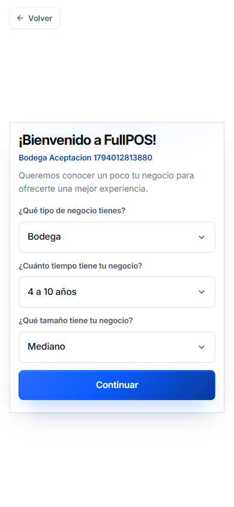
Escritorio · respuestas seleccionadas
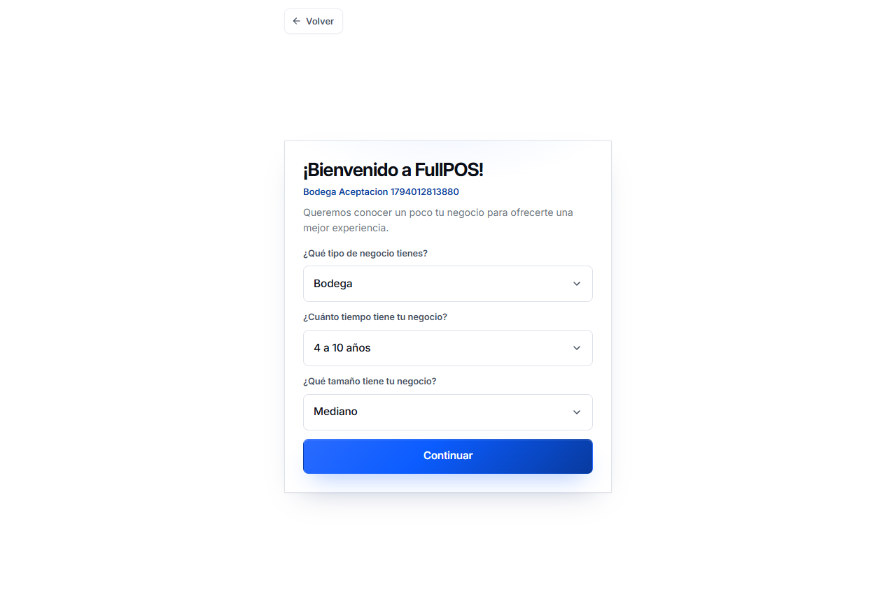
Cliente existente · salta las preguntas
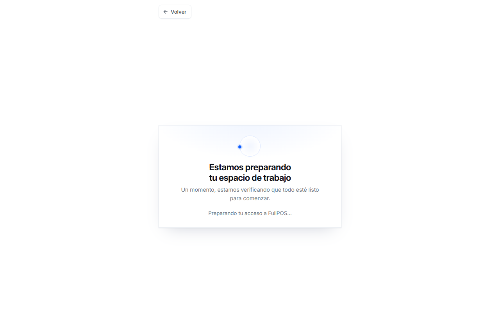
4. Invitación al asistente recorrido opcional, no bloquea la entrada
Escritorio 1280
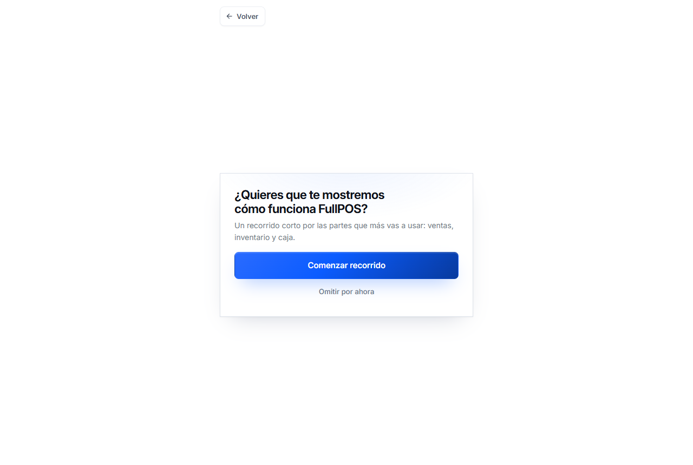
Móvil 390
5. Preparando el espacio de trabajo sin porcentajes falsos
Escritorio 1280
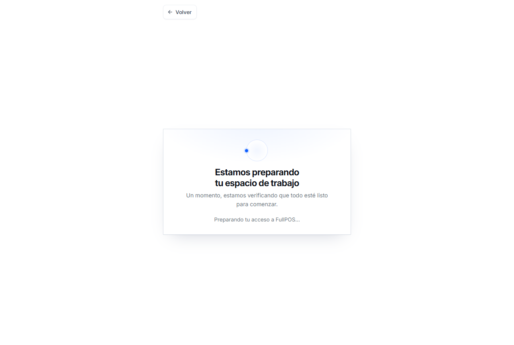
Móvil 390
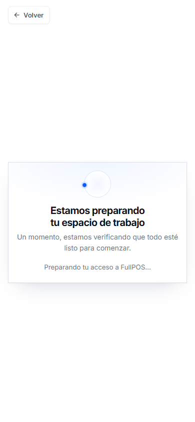
6. Entrada al POS autenticado
Escritorio · entrada a la appMóvil · POS
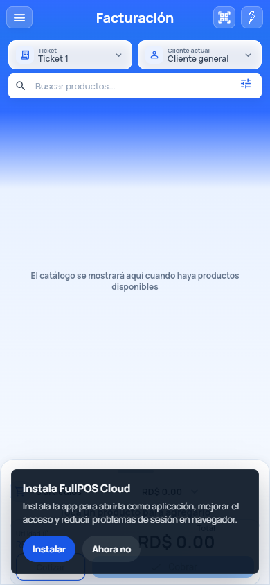
Escritorio 1280 · POS real (/cotizaciones)
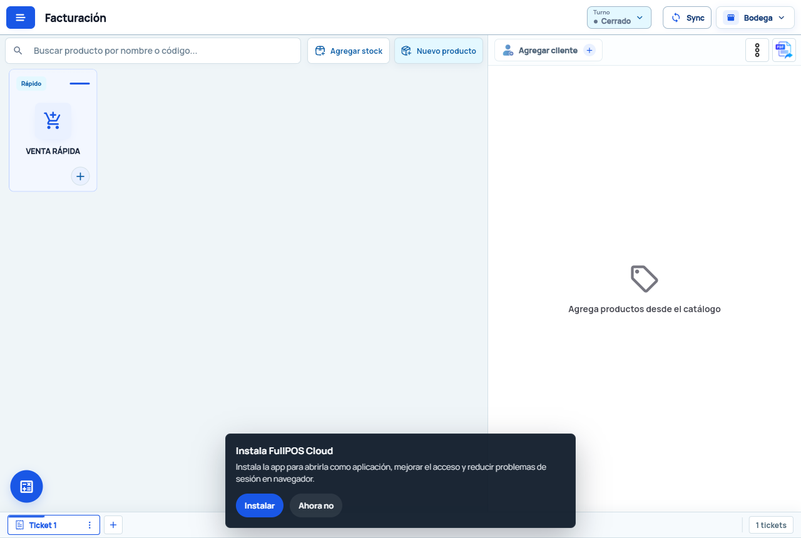
7. Sesión persistente refresh y reapertura sin pedir credenciales